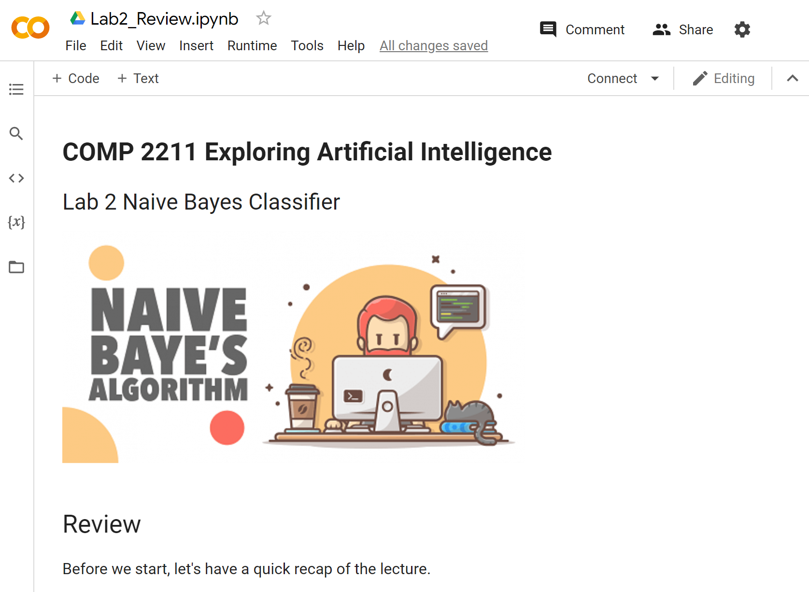

This part of this lab is a review of the Naive Bayes Classifier. It aims to refresh your memory of what you have learned in class.
Please download the notebook by right-clicking and selecting "Save link as" and opening it using using Google Colab. You should see the following if you open the notebook successfully.

Heart diseases are the leading cause of death globally. According to World Health Organization, an estimated 17.9 million people died from heart diseases in 2019, representing 32% of all global deaths. Of these deaths, 85% were due to heart attack and stroke.
https://www.who.int/news-room/fact-sheets/detail/cardiovascular-diseases-(cvds)
In this lab, we are going to use a small heart disease dataset to build a Naive Bayes Classifier for Heart Disease Detection.
A couple of lab tasks are given to you to practice your skills on building an AI model using Naive Bayes. Please download the notebook, the training and testing dataset (training, testing) and open the notebook using Google Colab. You should see the following if you open the notebook successfully.
Lab2_Tasks.py to ZINC. This list is incomplete; you can help by expanding it.
Q: Are we allowed to use external libraries (e.g., sklearn) to implement this lab?
A: In this lab, we will only be using numpy, and you are NOT allowed to import extra external libraries (i.e., no sklearn).
The goal of this lab is to implement Naive Bayes from scratch (we use numpy only because Python doesn't have native support for arrays), and to give you a hands-on experience of what is going on underneath sklearn.
Q: What should we do for Task 1 and Task 2 in terms of grading? What is the grading criteria?
A: ZINC will check the final three print() statements in the "Test Accuracy" section of the lab notebook, and you don't need to add any additional print() statements.
Except for the parts marked "TODO" in the tasks, and the Google Drive mount code as specified in the submission instructions, please don't modify any other parts of the notebook code.
ZINC will also show the detailed grading test cases after you have made your submission. You will have unlimited submission attempts, and we will keep only the latest submission score.
Q: Why when we download the notebook from Colab as Python script, it gives us all lowercase lab2_tasks.py?
A: It is a Colab "feature". Please rename to Lab2_Tasks.py, as ZINC is case-sensitive. Sorry for the inconvenience. We will keep this in mind for future Labs and PAs to avoid this issue. We will refrain from performing further changes to Lab 2, as it would break the submissions of those who had already submitted.
Q: Are we allowed to use Python standard libraries (e.g., from collections import defaultdict)?
A: Yes, Python standard libraries are allowed. Please visit here for an official comprehensive list of modules included in Python 3.
Q: If ZINC says that I have achieved "Total Score 2/2", does that mean I have passed the lab and obtained the 2% grade?
A: Yes, congratulations!